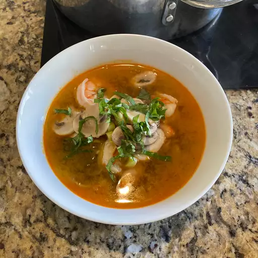

The Recipe for Tom Yum Soup

Description
Tom Yum soup, a renowned Thai delicacy, is a tantalizing and aromatic dish that encapsulates the vibrant flavors of Thai cuisine. This hot and sour soup is typically prepared with a fragrant broth infused with lemongrass, kaffir lime leaves, galangal, and Thai bird chilies, creating a symphony of bold and zesty notes. The soup is generously loaded with succulent shrimp, mushrooms, and often includes other ingredients like cherry tomatoes and cilantro.
The combination of these fresh and aromatic elements gives Tom Yum its distinctive taste profile—spicy, tangy, and incredibly savory. Renowned for its invigorating properties, this soup is a sensory delight that reflects the rich culinary heritage of Thailand.
Ingredients
- 4 cups chicken or vegetable broth
- 200 grams shrimp, peeled and deveined
- 200 grams mushrooms, sliced
- 1 medium-sized tomato, cut into wedges
- 1 small onion, sliced
- 2-3 stalks lemongrass, cut into 2-inch pieces and smashed
- 3-4 kaffir lime leaves, torn into pieces
- 1-2 Thai bird chilies, crushed (adjust according to spice preference)
- 1-inch piece galangal, sliced (or substitute with ginger if unavailable)
- 3 tablespoons fish sauce
- 1 tablespoon soy sauce
- 1 tablespoon lime juice
- 1 teaspoon sugar
- Fresh cilantro leaves for garnish
- Optional: Thai chili paste (Nam Prik Pao) for added depth of flavor
Cooking Steps
-
Prepare ingredients
- Clean and prepare all the ingredients as mentioned.
-
Boil broth
- In a pot, bring the chicken or vegetable broth to a boil.
-
Add aromatics
- Add lemongrass, kaffir lime leaves, galangal, Thai bird chilies, and onion to the boiling broth. Allow it to simmer for about 5-10 minutes to infuse the flavors.
-
Add mushrooms and tomatoes
- Add sliced mushrooms and tomato wedges to the simmering broth. Cook until the mushrooms are tender.
-
Season the soup
- Stir in fish sauce, soy sauce, lime juice, and sugar. Adjust the seasoning to your taste preference.
-
Add shrimp
- Add peeled and deveined shrimp to the pot. Cook until the shrimp turn pink and opaque.
-
Add Thai chili paste
- For additional depth of flavour, you can add a spoonful of Thai chili paste (Nam Prik Pao) to the soup.
-
Taste & adjust
- Taste the soup and adjust the flavors, adding more fish sauce, lime juice, or sugar if needed.
-
Serve
- Once the shrimp are cooked and the flavors have melded, remove the lemongrass, kaffir lime leaves, and galangal slices, Ladle the Tom Yum soup into serving bowls.
-
Garnish & enjoy
- Garnish the soup with fresh cilantro leaves, Serve hot and enjoy this flavourful and aromatic Thai classic.
Feel free to customize the soup by adding other ingredients like tofu, chicken, or additional vegetables. Adjust the spiciness level according to your preference for an authentic Tom Yum experience.
Enjoy your Homemade Tom Yum Soup!